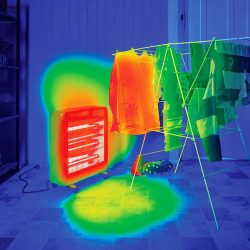
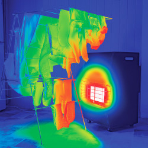
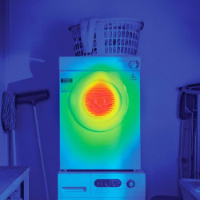
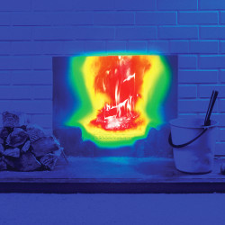
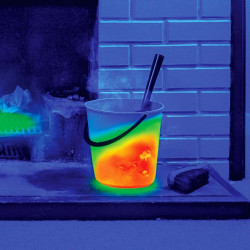
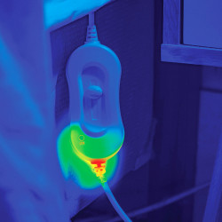
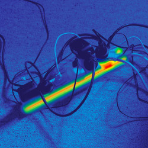
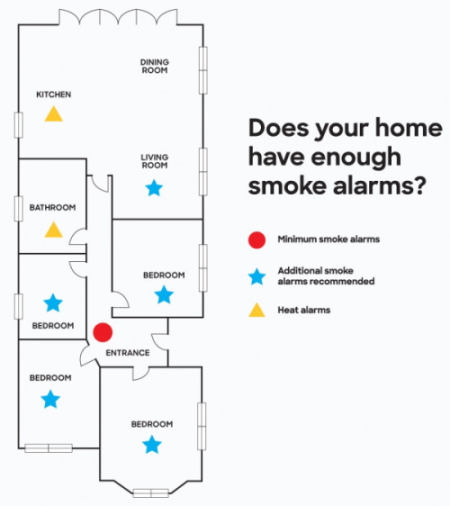

Many Kiwi homes have a gas-powered BBQ outside. These are great for cooking during the summer, but can also pose a fire risk if not stored and maintained correctly.
Here are some tips for reducing the risk of fire when using BBQs and gas cylinders.
The soap bubble test
A common cause of BBQ fires is gas leaking from where the BBQ hose fits into the cylinder valve.
Whenever you connect a gas cylinder to a BBQ, make sure it's hand tight.
You can do this by turning the gas cylinder on, and then pouring a little soapy solution
(1/4 cup of water and a squirt of liquid suds) over the valve.
If any bubbles are created you may have a gas leak. Turn the valve off and replace the cylinder O-ring.
BBQs
BBQs are potentially dangerous when used carelessly or when consuming excessive amounts of alcohol.
Treat your BBQ the same way you would a stove: don't drink and fry, and avoid leaving cooking unattended.
Ensure you regularly check and maintain any fittings and connections. Use the soap bubble test to make sure there are no leaks.
Leave plenty of clear space around the BBQ. Make sure there is no nearby debris that could catch fire.
Supervise children at all times when using the BBQ.
Remove all excess fat from the BBQ after each use.
Gas cylinders
Use the soap bubble test to make sure gas cylinders are secure and not leaking.
Make sure the cylinder is turned off when you've finished using it.
Have all gas appliances serviced according to manufacturer instructions.
Store and install cylinders in an upright position.
Did you know that one in six house fires start in the bedroom?
Fires that start in the bedroom are particularly dangerous, as there may be people sleeping and unaware.
Here are some simple things you can do to reduce the risk of a fire starting in the bedroom:
Smoke Alarms
Install long life photoelectric smoke alarms. These are more likely to detect fires quickly than other types of smoke alarms.
Install smoke alarms in every bedroom in the house, especially if you usually keep bedroom doors shut.
If this isn't possible, make sure you install a photoelectric smoke alarm in the hallway within 3 metres of the bedrooms.
Lighting
Make sure you have the correct bulb size and rating (in watts) fitted in lamps, according to the manufacturer specifications.
Keep a torch or your phone near the bed, so you can find your way out of the house if it's dark.
Candles
Never leave candles unattended.
Ensure candles are placed on a surface that won't catch on fire, like a ceramic plate or a special holder.
Don't let children use, light or play with candles.
Keep matches, lighters and anything else that can start a fire out of reach of children.
Electric Blankets
If you use an electric blanket, make sure it lies flat on the bed and the controls or cords are not twisted or caught. Twisted cords are a common cause of electric blanket fires.
Worn and old electric blankets can cause serious injury. At the first sign of wear, replace the blanket or have it checked by a qualified electrician.
Never sleep with an electric blanket turned on, even on a low temperature. Always switch it off before you hop into bed.
If storing an electric blanket off the bed during summer, roll it up rather than fold it.
Smoking
Never smoke in bed. You may fall asleep while you're smoking and if the cigarette is still alight, it could start a fire.
Did you know that one in four house fires start in the kitchen?
Making your kitchen fire safe is a really important part of having a fire safe home. Here are some simple things you can do to reduce the risk of a fire starting in the kitchen
When you’re cooking
Don't drink and fry. Alcohol is involved in half of all fatal fires.
Instead, pre-prepare a meal, get takeaways, or use the microwave.
Never attempt to drink alcohol or take medication that makes you sleepy when cooking.
Don’t leave the room when cooking. If you have to, always turn off the stove first.
Unattended cooking is the leading cause of house fires in New Zealand.
Keep curtains, tea towels, oven mitts and any flammable items well away from the cooking area when you're cooking.
Keeping a clean and safe kitchen
Clean your stovetop after each use. This prevents spilled fats and burnt foods from building up.
Clean rangehood filters regularly.
Keep a fire extinguisher and a fire blanket somewhere in your kitchen. Make sure you know how to use them.
Smoke alarms
Don't install a smoke alarm in your kitchen. Smoke and heat from cooking (and the toaster) can activate the alarm.
Smoke alarms shouldn't be installed in the bathroom or laundry either.
You can still protect these areas with a heat alarm. A heat alarm is designed to activate when the room reaches a set temperature.
They are useful in places where a smoke alarm would usually give false alarms.
If a fire starts
If your frypan is on fire, place the lid of the frypan, a wet tea towel, or another large flat object (like a chopping board) over the pan to starve the fire of oxygen.
Never throw water onto a frypan that's on fire.
Never, ever attempt to carry a burning frypan outside.
If you have a fire in your oven, try to turn off the power or gas, either at the stove or at the mains.
Preventing scalds
Another big danger in the kitchen is scalds — burns caused by boiling water. Here are some tips for preventing scalds:
Keep kids out of the kitchen or cooking areas when you're cooking or preparing meals.
Keep kettles, jugs and teapots away from the edge of benches and tables.
Turn saucepan handles so they're not sticking out over the floor. Use the elements or hot plates at the back of the stove if possible.
Make sure all upright stoves are securely fastened to the wall and keep oven doors closed, except when grilling as per manufacturers instructions.
For advice on treating scalds and burns, visit the St John website.
Every year, as temperatures drop, we see a significant increase in the number of house fires.
Winter brings a unique set of fire dangers that you need to be aware of.
Follow these fire simple safety tips to help keep you, your whanau or flatmates safe, no matter the season.

Electric heaters
Electric heaters
Electric heaters include oil heaters and fan heaters
Heaters have at least a metre of clear space surrounding them while in use
Heaters are plugged directly into a wall socket
Clothing and other items are not left to dry on top of heaters

LPG gas heater
If the heater doesn’t light straight away, turn it off then try again.
Don't let the gas build up before trying to relight it
Heaters have at least a metre of clear space surrounding them while in use
Gas hose shows no sign of damage or wear
Fresh air is coming into the house while the heater is in use
Has been serviced within the last 12 months
Clothing and other items are not left to dry on top of heaters

LPG gas heater
If the heater doesn’t light straight away, turn it off then try again.
Don't let the gas build up before trying to relight it
Heaters have at least a metre of clear space surrounding them while in use
Gas hose shows no sign of damage or wear
Fresh air is coming into the house while the heater is in use
Has been serviced within the last 12 months
Clothing and other items are not left to dry on top of heaters

Indoor fires
Pop a reminder in your calendar to get your fireplace cleaned before you light the first fire of the season
The chimney flue has been cleaned in the last year
A fireguard or spark guard is always used when the fire is lit
Matches and lighters are kept out of reach of children

Hot ashes
Did you know: ashes can take up to 5 days to cool completely
Ashes are left to cool before disposing of them
Water is poured over hot ashes in a metal bin
Ashes/ashtray are emptied into a metal bin

Electric blankets
Check for hotspots in your blanket by turning it on high for 15 mins, then switching it off and running your hand over the blanket
Have checked for hotspots before use
Are less than 5 years old
Are rolled during storage, not folded
Are always turned off before going to sleep
Cords and controls are not twisted, and the blanket lies flat on the bed
Heavy objects are never placed on the bed while electric blanket is in use

Batteries, chargers & multi-plugs
Heat-generating devices include anything that produces heat when in use, even small appliances like hairdryers and toasters
One multi plug is used per heat-generating device
Chargers and cords are not damaged, modified or used with incompatible devices
Devices with lithium batteries are not used or charged after being dropped of damaged
Electrical cords aren’t frayed, damaged or modified
Electrical cords aren't coiled, or underneath carpet or bedding
Did you know a house fire can kill you in less than three minutes?
In a fire, you'll probably be scared and disorientated. Toxic smoke might make it hard to breathe and see clearly.
You will only have 1 or 2 minutes from the sounding of the smoke alarm to when your life is seriously threatened by fire or smoke.
That's why it's essential to have an escape plan in place, to practice it regularly, and to know how to get to safety quickly.
Build your escape plan
To build your escape plan, we will ask you to think about:
Smoke alarms in your home.
How you will make sure everyone in the household gets out.
A safe place where everyone will meet.
What are your best and alternative ways out.
Take three minutes now to create your escape plan now, so you can escape then.
Fire and Emergency New Zealand recommend long-life photoelectric smoke alarms.
Photoelectric and Interconnected smoke alarms
Fire and Emergency New Zealand recommend long-life photoelectric smoke alarms.
They are far more effective than ionisation alarms at detecting slow smouldering fires, which burn for hours before bursting into flames.
Better yet, choose a set of photoelectric smoke alarms that can be connected to each other via Bluetooth technology, or wiring together.
If a fire is detected in one room of the house, interconnected alarms will trigger all the alarms in your home, so everyone will be alerted to a fire sooner.
This is especially important in multi-storey homes and homes with long hallways.
Make sure you have long-life batteries
The great thing is, most smoke alarms now come with a built-in, sealed, long-life battery, which will last as long as the smoke alarm – about ten years.
That’s a big improvement on the old 9-volt batteries, which are cheaper but will start ‘chirping’ to be replaced after about one year.
If you have a smoke alarm with an old 9-volt battery, it’s time to upgrade to a long-life photoelectric alarm.
Hard-wired smoke alarms
Some smoke alarms can be wired into your home’s power or security system.
But you will still need a back-up battery installed in case of a power cut,
and installation will be more involved (and costly) as you will need an electrician to run wiring to each location.
Smoke alarms for deaf or hard of hearing
If you’re deaf or hard of hearing, there are specialised smoke alarm systems with extra features such as extra loud and/or lower pitch alarm sounds,
flashing strobe lights, or vibrating devices. Having hard-wired, interconnected photoelectric smoke alarms fitted alongside bed-shakers and/or strobe lights is ideal.
More about specialised smoke alarms
Landlord or tenant? Who is responsible for smoke alarms
Both landlords and tenants are responsible. The landlord is responsible to ensure there are working smoke alarms in every rental,
and to replace any smoke alarms that no longer work with new photoelectric ones. If the rental has an older alarm with a 9-Volt battery,
replacing the battery is the tenant’s responsibility.
Learn more about responsibilities
Where should I put smoke alarms?
Fire and Emergency New Zealand recommend installing a smoke alarm in every bedroom, hallway and living area.
You may also choose to install a heat alarm in the kitchen, laundry, bathroom or garage.

Important things to consider
Don't put a smoke alarm in your kitchen, where smoke from cooking could set it off, use a heat alarm here instead.
Smoke alarms cannot detect smoke through a closed door, so think carefully about the layout of your home.
Required property requirements
Your landlord must install a smoke alarm:
within 3 metres of each bedroom door, or in every room where a person sleeps
in each level or story of a multi-story or multi-level home
in all rental homes, boarding houses, rental caravans, and self-contained sleep-outs.